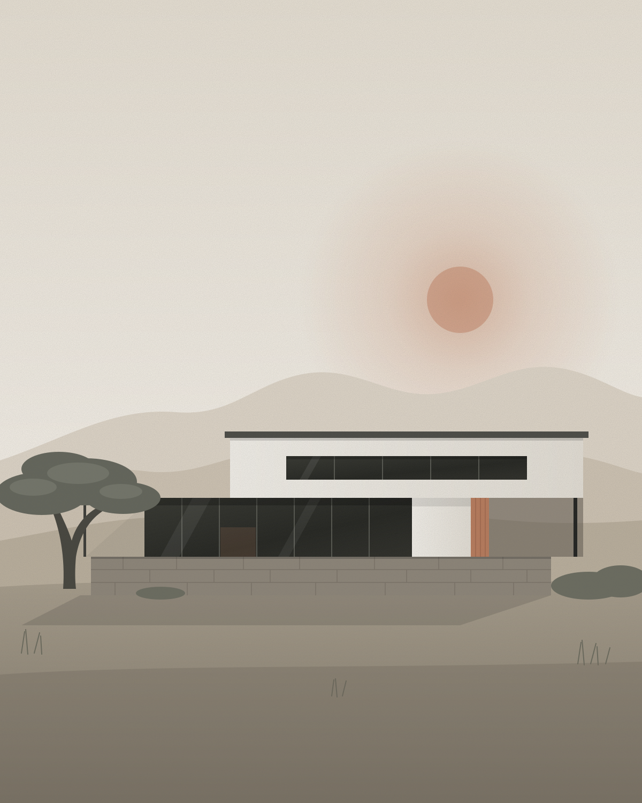
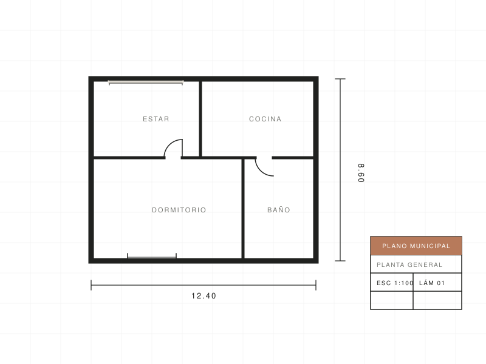
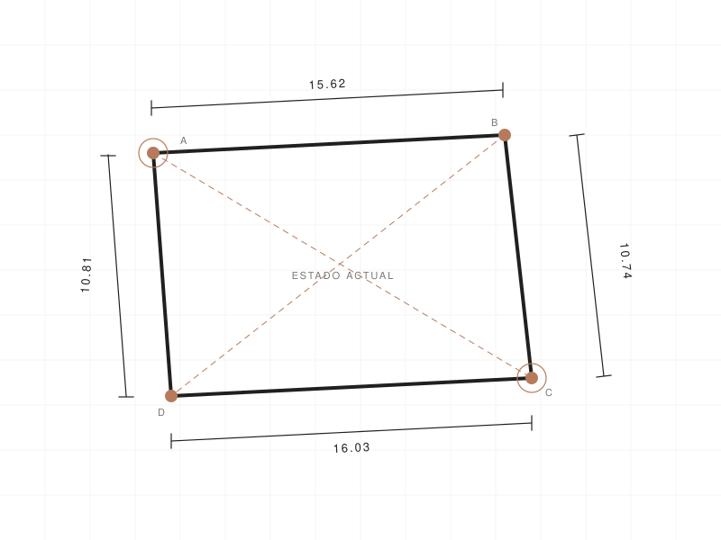
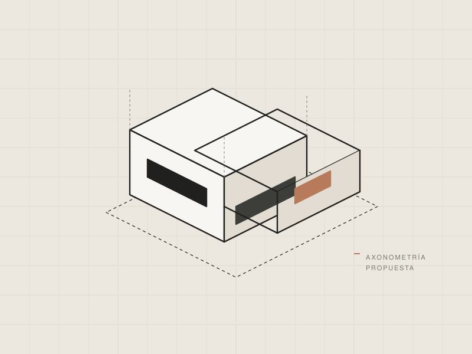
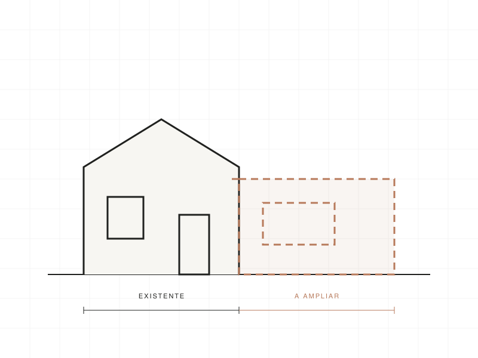
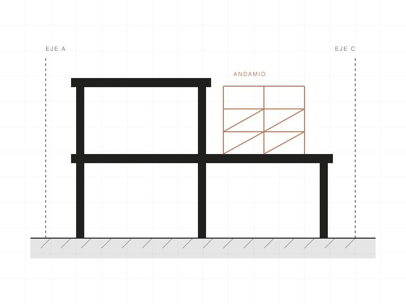
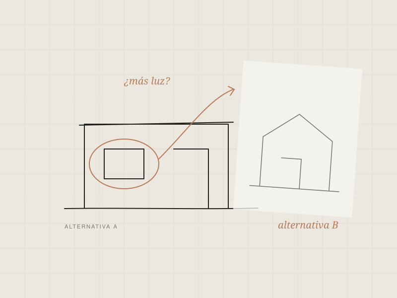
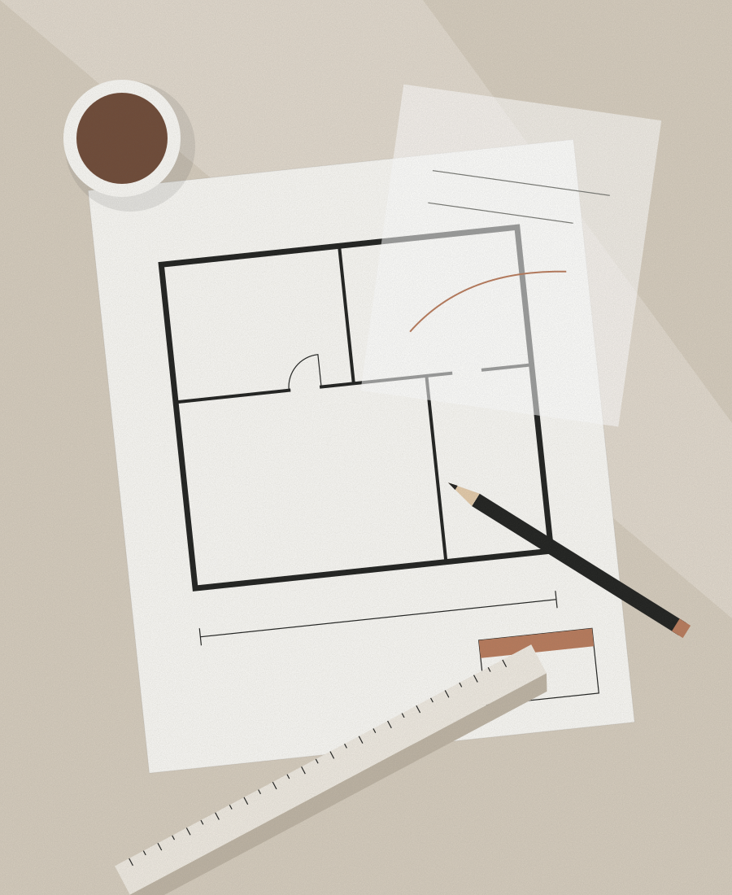

Arquitecta en Anisacate, Córdoba
Arquitectura pensada para tu forma de vivir.
Proyectos, documentación y acompañamiento técnico para construir, transformar y regularizar tus espacios.
Atención profesional en Anisacate y localidades cercanas.

Enfoque
Cada proyecto empieza con una buena idea.
Detrás de cada espacio hay una necesidad, una historia y una forma particular de vivir. Mi trabajo consiste en transformar esas necesidades en soluciones arquitectónicas funcionales, viables y adaptadas a cada situación.
-
01
Atención personalizada
Cada proyecto recibe una mirada particular, con comunicación directa y seguimiento cercano.
-
02
Soluciones a medida
Propuestas adaptadas al terreno, las necesidades y las posibilidades de cada cliente.
-
03
Acompañamiento profesional
Asistencia técnica y orientación durante las distintas etapas del proyecto.
Servicios
¿Qué necesitás resolver?
Servicios profesionales para acompañarte en cada etapa de tu proyecto.
-

01Planos municipales
Documentación técnica y elaboración de planos para gestionar la regularización y aprobación de construcciones. Incluye la gestión y tramitación de la documentación municipal.
Consultar por este servicio -

02Relevamientos
Medición y documentación gráfica del estado actual de una propiedad para conocer sus características y trabajar sobre una base precisa.
Consultar por este servicio -

03Proyectos arquitectónicos
Diseño y desarrollo de proyectos adaptados a tus necesidades, preferencias y características del terreno.
Consultar por este servicio -

04Ampliaciones y remodelaciones
Transformación de espacios existentes para mejorar su funcionalidad, distribución y estética.
Consultar por este servicio -

05Conducción técnica de obra
Acompañamiento y seguimiento técnico de los trabajos para favorecer una correcta ejecución del proyecto.
Consultar por este servicio -

06Asesoramiento profesional
Orientación para evaluar alternativas, resolver dudas y tomar decisiones antes de comenzar una obra.
Consultar por este servicio
¿No sabés bien qué servicio necesitás? Contame tu situación y lo vemos juntos.
Contame sobre tu proyecto
Sobre mí
Soy Nadia, arquitecta.
Soy arquitecta egresada de la Facultad de Arquitectura, Urbanismo y Diseño de la Universidad Nacional de Córdoba.
Me dedico al desarrollo de proyectos arquitectónicos, relevamientos, documentación técnica y gestión municipal.
Entiendo que cada proyecto representa una decisión importante. Por eso, trabajo desde una mirada personalizada, buscando comprender las necesidades de cada cliente y ofrecer soluciones funcionales, viables y adecuadas a cada caso.
Mi objetivo es acompañarte con claridad y compromiso, desde las primeras ideas hasta las distintas etapas de tu proyecto.
- Formación
- FAUD · Universidad Nacional de Córdoba
- Zona de trabajo
- Anisacate y localidades cercanas
- Atención
- Directa y personalizada
Proyectos
Espacios, ideas y soluciones.
Una mirada sobre el trabajo arquitectónico.
Portfolio en preparación.
Estoy seleccionando trabajos para compartir en este espacio. Si querés conocer ejemplos relacionados con tu consulta, escribime y te cuento sobre experiencias similares.
Consultar por trabajos similaresProceso
Tu proyecto, paso a paso.
-
01
Primer contacto
Me contás qué necesitás y cuáles son tus objetivos.
-
02
Evaluación
Analizamos tu situación y las características del proyecto.
-
03
Propuesta
Definimos las soluciones y el alcance del trabajo.
-
04
Desarrollo y acompañamiento
Avanzamos con el trabajo profesional y el seguimiento correspondiente.
Reseñas
La experiencia de quienes confiaron.
Reseñas en Google
Opiniones publicadas por clientes en el perfil de Nadia Banegas.
Las reseñas se publican y verifican en Google. Podés leer todas las opiniones directamente en su perfil y, si trabajaste con Nadia, también dejar la tuya.
Ver todas las reseñasPreguntas frecuentes
Antes de empezar.
Si tu duda no está acá, escribime y lo conversamos.
Depende del tipo de trámite y de los requisitos de cada municipio. En general, se parte de la documentación de la propiedad (por ejemplo, escritura o boleto de compraventa y datos catastrales) y de un relevamiento o proyecto de lo que está construido o se va a construir. En una primera consulta reviso tu caso y te indico qué documentación conviene reunir.
En muchos casos es posible iniciar un trámite de regularización. La viabilidad depende de las características de la construcción y de la normativa vigente en cada localidad, por eso se analiza caso por caso. El primer paso suele ser un relevamiento del estado actual para conocer la situación con precisión y definir cómo avanzar. La aprobación final depende siempre del organismo correspondiente.
Sí. Trabajo sobre espacios existentes para mejorar su funcionalidad, su distribución y su estética. Partimos de lo que ya está construido, evaluamos las posibilidades y desarrollamos una propuesta adaptada a tus necesidades, junto con la documentación que el trabajo requiera.
Sí. Atiendo en Anisacate y en localidades cercanas. Si tu propiedad está en Alta Gracia o en otra localidad de la zona, escribime con la ubicación y conversamos sobre la posibilidad de acompañarte.
Escribime por WhatsApp y contame qué necesitás, dónde está la propiedad y, si los tenés, compartime fotos o documentación. Con esa información puedo orientarte y, si hace falta, coordinamos una visita para conocer el lugar y preparar una propuesta con el alcance del trabajo y los honorarios.
Sí, y es lo más recomendable. Consultar antes de empezar permite evaluar alternativas, anticipar requisitos técnicos y municipales y tomar decisiones con más información. El asesoramiento profesional está pensado justamente para esa etapa.
Contacto
¿Tenés un proyecto en mente?
Contame qué necesitás. Podemos conversar sobre tu idea y evaluar juntos cómo avanzar.
Escribir por WhatsApp- Zona de atención Anisacate y localidades cercanas
- WhatsApp +54 9 3547 59-1959
- Ubicación Anisacate, Córdoba, Argentina